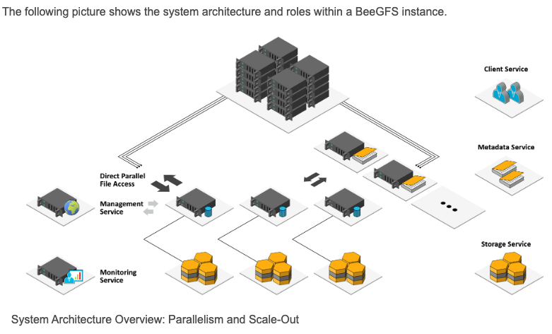

Beegfs存储
Beegfs
简介
BeeGFS 包含两个内置基准测试工具，可以分别帮助表征或评估网络或存储NetBench 和 StorageBench。当启用NetBench模式时，服务器将丢弃收到的写请求而不是写入数据。类似地，在读取请求的情况下，不会从底层文件系统读取，而是仅将内存缓冲区发送到客户端。NetBench 模式旨在测试独立于底层磁盘的网络流吞吐量。另一方面，StorageBench 旨在测量独立于网络性能的底层文件系统的流吞吐量。StorageBench 是不使用网络的存储目标基准测试。storage-bench 命令只是将请求发送到存储目标以开始写入/读取数据。通过这样做，我们消除了网络的影响。我们从存储平台得到的输出是在网络性能理想的情况下系统可以达到的最佳性能。本博客说明了如何使用 StorageBench 来比较不同存储目标的性能，从而识别有缺陷或配置错误的目标
架构

BeeOND：BeeGFS 点播
BeeOND（“ Bee GFS On Demand ”，发音类似于“beyond”）的开发目的是为了能够轻松地动态创建一个或多个 BeeGFS 实例。此功能在许多不同的用例中非常有用，例如在云环境中，但特别是在创建临时工作文件系统时。BeeOND 通常用于在计算作业期间聚合计算节点中内部 SSD 或硬盘的性能和容量。这提供了额外的性能和一种非常优雅的突发缓冲方式
参考: https://doc.beegfs.io/latest/advanced_topics/beeond.html
大多数 HPC 集群系统使用基于专用服务器上并行文件系统的全局存储系统来实现高吞吐量。计算节点通常配备（或可以轻松配备）内部硬盘或 SSD，这可以提供额外的性能优势。计算节点中的内部驱动器的问题在于，它们既不提供跨多台机器的单一名称空间的优势，也不提供共享并行文件系统的灵活性和性能。BeeOND 通过在属于特定计算作业一部分的所有计算节点上基于“每个作业”创建共享并行文件系统来解决这个问题，并且完全针对作业的运行时。
BeeOND 的使用与全局共享集群文件系统是基于 BeeGFS 还是其他技术无关。BeeOND 只是创建一个新的单独的安装点。任何标准工具（如cp或rsync）都可用于将数据传入和传出 BeeOND，但 BeeOND 软件包还包含一个并行复制工具，用于在 BeeOND 实例和另一个文件系统（例如永久全局 BeeGFS）之间传输数据。
由于启动过程非常简单，因此可以轻松将 BeeOND 与工作负载管理器（例如 Torque 或 Slurm）集成。例如，Torque 提供序言和结尾脚本，这些脚本将在分配给作业的第一个节点上执行。由于 BeeOND 只需一个命令即可启动和停止新的 BeeGFS 实例，因此您可以轻松地将其添加到这些脚本中，以便在计算作业启动时启动 BeeOND，并在作业完成时停止它。请参阅工作负载管理器的文档以了解类似的机制
admon
升级变化: https://groups.google.com/g/fhgfs-user/c/zVQrKgzTB3k
安装
图形化安装(GUI)
- 修改配置脚本: admon/scripts/setup.defaults
- 版本信息
|
|
Package Descriptions 包说明
下表显示了运行 BeeGFS 需要定义的角色以及每个角色对应的包。 BeeGFS 的设计允许在同一节点上运行任意服务组合（例如元数据和存储服务器）。 有关 BeeGFS 节点角色的更多信息可以在体系结构中找到。
BeeGFS Roles and Corresponding Packages
| Management Server (one node)Manages configuration and group membershipHostname or IP address must be known by other nodes at service start time | beegfs-mgmtd |
|---|---|
| Metadata Server (at least one node)Stores directory information and allocates file space on storage servers | beegfs-meta |
| Storage Server (at least one node)Stores raw file contents | beegfs-storage |
| ClientKernel module to mount the file systemRequires userspace helper daemon for logging and hostname resolution | beegfs-client, beegfs-helperd |
| RDMA Supportlibraries for RDMA support for Metadata and Storage Services | libbeegfs-ib |
| Mon - InfluxDB based Monitoring Server (optional)Continuous monitoring of serversLive statistics | beegfs-mon |
BeeGFS utilities for administratorsbeegfs-ctl tool for command-line administrationbeegfs-fsck tool for file system checkingSeveral small helper scripts |
beegfs-utils |
| BeeGFS CommonCommon files for all packages | beegfs-common |
参考
手动安装: https://doc.beegfs.io/latest/advanced_topics/manual_installation.html
Beegfs基础: https://www.nas.nasa.gov/hecc/support/kb/beegfs-basics_625.html
适用于 HPC BeeGFS 存储的 Dell EMC Ready 解决方案的功能: https://www.dell.com/support/kbdoc/en-us/000128808/features-of-dell-emc-ready-solutions-for-hpc-beegfs-storage
beegfs-ctl详解: https://blog.csdn.net/qq_22418329/article/details/79893623
【beegfs相关】beegfs集群部署: https://www.cnblogs.com/luxf0/p/15798677.html
- 如何在 AWS 上构建并行文件系统 BeeGFS：https://aws.amazon.com/cn/blogs/china/how-to-build-beegfs-on-aws-system/
- BeeGFS官方：https://www.beegfs.io/content/
- BeeGFS Mirroring：https://www.beegfs.io/wiki/AboutMirroring
- BeeGFS BuddyGroup：https://www.beegfs.io/wiki/BuddyGroups
- Management of Mirror Buddy Groups：https://www.beegfs.io/wiki/BuddyGroups
- StorageSynchronization：https://www.beegfs.io/wiki/StorageSynchronization
- BeeGFS FAQ：https://www.beegfs.io/wiki/FAQ
晓兵
博客: https://logread.cn | https://blog.csdn.net/ssbandjl | https://cloud.tencent.com/developer/user/5060293/articles
weixin: ssbandjl
公众号: 云原生云

- 原文作者：晓兵
- 原文链接：https://logread.cn/post/stor/beegfs_storage/
- 版权声明：本作品采用知识共享署名-非商业性使用-禁止演绎 4.0 国际许可协议进行许可，非商业转载请注明出处（作者，原文链接），商业转载请联系作者获得授权。